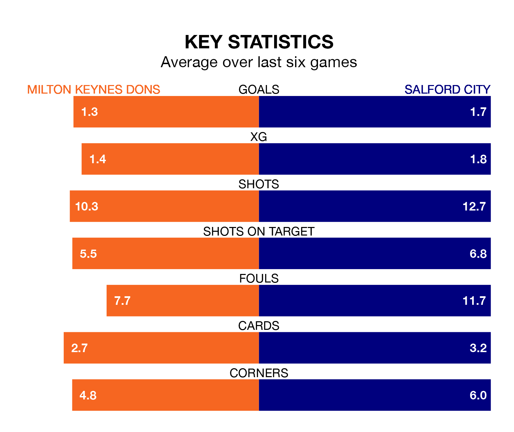

Milton Keynes Dons host Salford City on Saturday at Stadium mk in EFL League Two.
In their last league match, on Tuesday, Milton Keynes beat Mansfield Town 2-1 away, with goals from Alex Gilbey and Matthew Dennis.
Salford lost, 2-0 at home against Gillingham on March 2.
In Matt Smith, Salford have one of the league's most on-form strikers so far this season. He has notched 22 goals in 36 appearances, to sit second in the scoring charts.
His goal rate of one every 135 minutes is quicker than that of Max Dean, Milton Keynes's top scorer with a goal every 170 minutes, and a total of nine goals in 22 games.
With 57 goals in 36 games so far this season, Dons are scoring more than average in the league with 1.6 goals per game. And they are conceding fewer than average, letting in 46 goals at a rate of 1.3 per game.
City, meanwhile, are below average scorers, with 1.4 goals per game, compared to a league average of 1.5. They have conceded 1.8 goals per game.
The Dons are fifth in the table after 36 games, of which they have won 18 and drawn seven, earning 61 points.
The Ammies are 14 places behind the home side in 19th, with 10 wins and 10 draws putting them on 40 points.
Milton Keynes are in mixed form in EFL League Two, with three wins and a draw from their last six games.
With a win and three draws over that period, the visitors' form is worse – they have taken six points from 18, compared to Milton Keynes's 10.
Saturday's match will be refereed by Dean Whitestone, who has taken charge of one EFL League Two game so far this season, issuing no red cards and booking four players. He has not awarded any penalties.
He is yet to oversee a match featuring either Milton Keynes or Salford this season.
Updated: 09:34 (UTC), 08/03/24